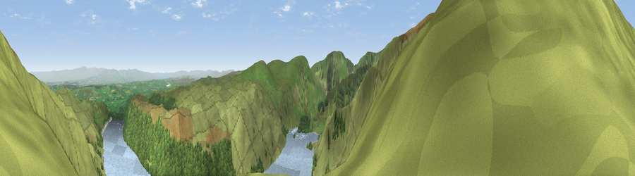

Viewpoint near Bampton
#2404 in England · top 12% of its area beats it · near BamptonWhere it is
The exact computed spot (NY 47125 14325). Click the marker for map links.
The view, rendered

A 360° render of this exact spot computed from the terrain model, tree cover and land cover — summer colours, afternoon light, calibrated against photographs of famous viewpoints. Real trees, hedges and buildings will differ in detail.
The panorama
Grey silhouette: terrain skyline in each direction (720 bearings, Earth curvature and refraction included). Dashed green: skyline with trees (+15 m) and buildings (+8 m) as obstacles. Blue strip: how far the ground is visible on each bearing.
Where the view opens
Wedge length = distance to the farthest visible ground on that bearing (vegetation-aware). Rings at 10, 25 and 50 km.
What fills the view
62% grassland · 27% water · 11% woodland
Angular shares of the visible panorama (visual magnitude), not map area. Landscape diversity 0.40 (0–1 Shannon).
Key numbers
More beautiful places nearby
The staircase of upgrades: each row has a higher view potential than everything closer. Driving times are estimates from straight-line distance, calibrated against real road routing — check an actual route before setting out.
| Place | Direction | Drive | Score |
|---|---|---|---|
| Viewpoint near Bampton | NNW · 0 km | ~1 min | 80.4 |
| High Street (summit) | SW · 4 km | ~10 min | 82.6 |
| Viewpoint near Watermillock | NNW · 7 km | ~14 min | 83.5 |
| Viewpoint near Legburthwaite | W · 13 km | ~24 min | 83.8 |
| Viewpoint near Legburthwaite | W · 14 km | ~26 min | 84.5 |
| Skiddaw South Top | NW · 26 km | ~41 min | 85.8 |
| Viewpoint near Applethwaite | WNW · 26 km | ~41 min | 86.7 |
| Long Side | WNW · 26 km | ~42 min | 89.5 |
54.52144, -2.81838 · source: screening · position refined by local search. Computed location — check access rights before visiting.